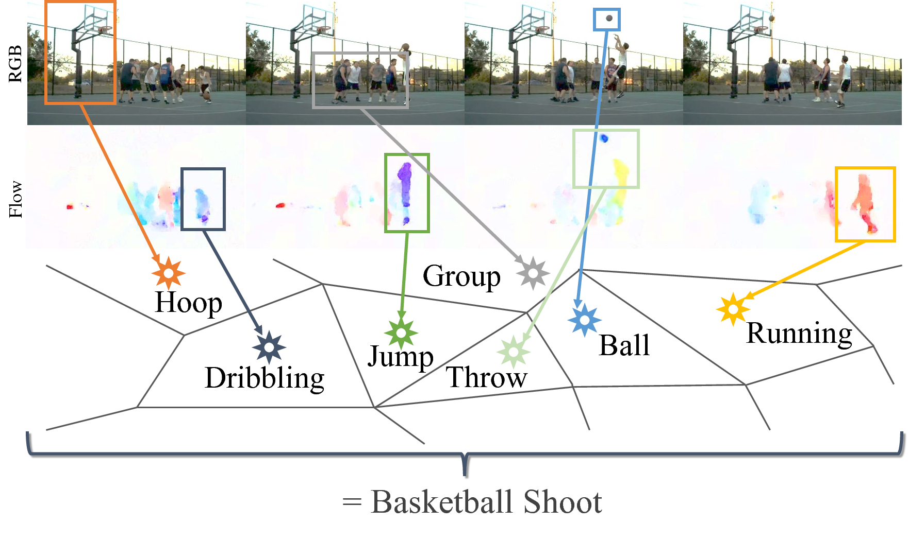
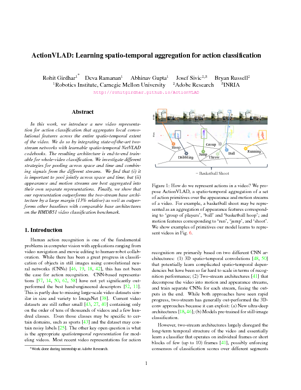

ActionVLAD: Learning spatio-temporal
aggregation for action classification
|  |
| In this work, we introduce a new video representation for action classification that aggregates local convolutional features across the entire spatio-temporal extent of the video. We do so by integrating state-of-the-art two-stream networks with learnable spatio-temporal NetVLAD codebooks. The resulting architecture is end-to-end trainable for whole-video classification. We investigate different strategies for pooling across space and time and combining signals from the different streams. We find that (i) it is important to pool jointly across space and time, but (ii) appearance and motion streams are best aggregated into their own separate representations. Finally, we show that our representation outperforms the two-stream base architecture by a large margin (13% relative) as well as outperforms other baselines with comparable base architectures when combined with iDT, on HMDB51 and UCF101 video classification benchmarks. |
People
Paper
|  |
R. Girdhar, D. Ramanan, A. Gupta, J. Sivic and B. Russell ActionVLAD: Learning spatio-temporal aggregation for action classification In Proc. of Conference on Computer Vision and Pattern Recognition (CVPR), 2017 [PDF] [arXiv] [code] [Supplementary] [BibTex] |
Acknowledgements
This work was partially supported by Siebel Scholarship to RG, NDSEG Fellowship to DF and Bosch Young Faculty Fellowship to AG. This material is based on research partially sponsored by ONR MURI N000141010934, ONR MURI N000141612007, NSF1320083 and a gift from Google. The authors would like to thank Yahoo! and Nvidia for the compute cluster and GPU donations respectively. The authors would also like to thank Martial Hebert and Xiaolong Wang for many helpful discussions.